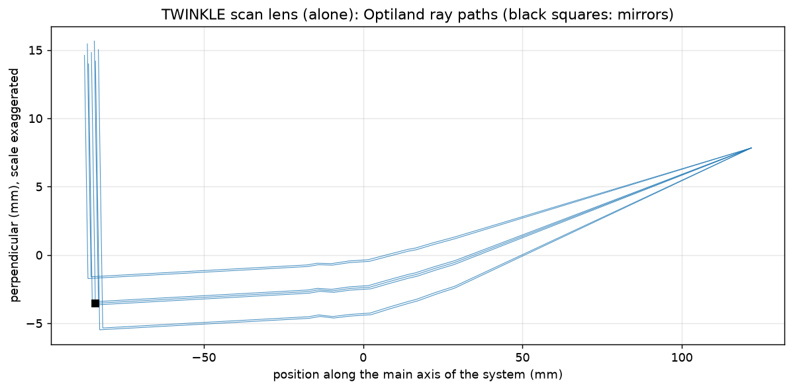

System layout
Works
Show Optiland's own 3D viewer (incomplete for this system)

optiland_issues_found.md). The projected layout above, drawn from the same ray coordinates, shows the whole path.Zemax stores, for every surface whose semi-diameter is automatic, the largest ray radius it computed. We re-trace the same file in Optiland (all fields and wavelengths, 40-ring hexapolar pupil) and take the largest local ray radius. Those values come from the file itself, so they are exact Zemax output, not read off a plot. Status is computed from the tolerances in comparison.json: match within 0.5%, partial within 5%.
| Quantity | Zemax | Optiland | Difference | Result |
|---|
| Requirement | Status | Notes |
|---|---|---|
| Load the file | Works | Loads. Same tilt and pickup caveats as the excitation path. |
| Galvo angle (18 configurations) | Works, patched | Written into the file text and reloaded for each angle. |
| Real-ray trace, all 17 distinct galvo angles | Works | 1801 of 1801 rays reach the image at every angle. |
| Semi-diameter on automatic surfaces | Works | The scan-lens image plane matches exactly. The galvo mirror is not scored (see above). |
| RMS spot vs galvo angle | Works | Geometric. |
| RMS wavefront, Strehl, PSF | Blocked | Paraxial engine rejects the tilts (issue 8). |
| 3D viewer of the model | Partial | See the layout section. |

optiland_issues_found.md). The projected layout above, drawn from the same ray coordinates, shows the whole path.The beam is focused by the scan lens (image NA 0.014, Airy radius 41 µm). Geometric RMS radius is 5.3 to 15.3 µm over ±8° of galvo angle; the chief ray moves 2412 µm per degree. There is no Zemax number to set against these, only the file's own semi-diameter.


Full details are in optiland_issues_found.md (issues 5 to 10 are new with these designs).
The same comparison as the verdict table, with the ratio, including any row that was not scored.
| Zemax surface | Comment | Zemax (mm) | Optiland (mm) | Ratio |
|---|
Prescription as stored in the Zemax file (coordinate breaks left out; Optiland absorbs them into the neighbouring surfaces). The Optiland radius is read back from the loaded model, so a difference would show an import error. Thicknesses are signed Zemax values: negative after a mirror.
| Zemax # | Comment | Type | Radius, Zemax (mm) | Radius, Optiland (mm) | Thickness (mm) | Glass | Semi-diameter (mm) | Clear aperture (mm) |
|---|
export UV_PROJECT_ENVIRONMENT=~/uv_venvs/evaluation_mac uv run python -m evaluation_tools.analyze_zmx designs/twinkle_scan_lens # about 1 to 3 minutes uv run python -m evaluation_tools.build_summary # regenerates all HTML
zemax_text.py holds the workarounds for features Optiland ignores (tilted surfaces, pickups, configurations). analyze_zmx.py runs the analysis and build_generic.py writes this page. The Zemax files come from the TWINKLE repository.